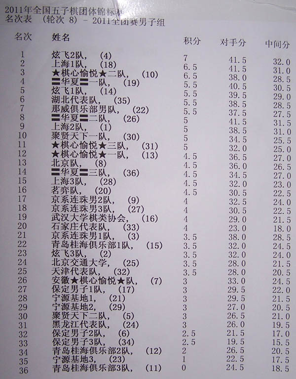

男子组八轮以后积分表
首页
五子棋新闻
#1 男子组八轮以后积分表 作者：被感动的人 发表时间：2011-5-1 23:20:15
 ［ 于 2011-5-1 23:52:57 时花20金币送鲜花一朵］
［ 冰雪笑醉 于 2011-5-2 0:17:19 时花20金币送鲜花一朵］
［ 冰雪笑醉 于 2011-5-2 0:23:23 时花20金币送鲜花一朵］
［ ^版徒 于 2011-5-2 0:34:19 时花20金币送鲜花一朵］
［ 聚贤联盟特使 于 2011-5-2 5:41:37 时花20金币送鲜花一朵］
#2 Re:男子组八轮以后积分表 作者：^版徒 发表时间：2011-5-1 23:53:53
最佳二台是谁呀,我看好华夏幽灵,网战棋手第一次实战,前八轮2负,6连胜,实在可贵~!
［ 快乐天羽 于 2011-5-2 0:11:14 时花20金币送鲜花一朵］
［ 快乐天羽 于 2011-5-2 0:11:25 时花20金币送鲜花一朵］
［ 快乐天羽 于 2011-5-2 0:11:51 时花20金币送鲜花一朵］
［ 快乐天羽 于 2011-5-2 0:11:56 时花20金币送鲜花一朵］
［ 快乐天羽 于 2011-5-2 0:11:58 时花20金币送鲜花一朵］
［ 冰雪笑醉 于 2011-5-2 0:19:34 时花20金币送鲜花一朵］
［ 冰雪笑醉 于 2011-5-2 0:20:30 时花20金币送鲜花一朵］
［ 冰雪笑醉 于 2011-5-2 0:21:13 时花20金币送鲜花一朵］
［ 冰雪笑醉 于 2011-5-2 0:22:56 时花20金币送鲜花一朵］
［ 冰雪笑醉 于 2011-5-2 0:23:44 时花20金币送鲜花一朵］
［ 潇洒 于 2011-5-2 1:53:09 时花20金币送鲜花一朵］
［ 潇洒 于 2011-5-2 1:53:19 时花20金币送鲜花一朵］
［ 五子痴 于 2011-5-2 8:27:20 时奖励此帖[金币加 100 威望加1］
#3 Re:Re:男子组八轮以后积分表 作者：梧桐风 发表时间：2011-5-2 0:08:32
引用：
原文由 ^版徒 发表于 2011-5-1 23:53:53 :
最佳二台是谁呀,我看好华夏幽灵,网战棋手第一次实战,前八轮2负,6连胜,实在可贵~!
哪个队的呀
#4 Re:男子组八轮以后积分表 作者：^版徒 发表时间：2011-5-2 0:12:33
华夏三队二台
#5 Re:男子组八轮以后积分表 作者：冰雪笑醉 发表时间：2011-5-2 0:18:30
 我看好微笑，微笑咋没去比赛啊。。
我看好微笑，微笑咋没去比赛啊。。
#6 Re:男子组八轮以后积分表 作者：可有可无滴人 发表时间：2011-5-2 0:45:34
华夏三队二台。。这个好厉害哇。。。
#7 Re:男子组八轮以后积分表 作者：慕容晓文 发表时间：2011-5-2 0:47:24
本次比赛很激烈啊，竟然没有小分将超过48的，9轮比赛，实在是罕见啊
#8 Re:男子组八轮以后积分表 作者：潇洒 发表时间：2011-5-2 1:51:59
支持幽灵..比得不错..继续加油~~!
#9 Re:男子组八轮以后积分表 作者：松痕 发表时间：2011-5-2 2:03:01
截至比赛男子是8轮。女子6轮。我的预测男女前三完全正确。哈哈。
#10 Re:男子组八轮以后积分表 作者：聚贤联盟特使 发表时间：2011-5-2 5:48:31

#11 Re:男子组八轮以后积分表 作者：冰魔 发表时间：2011-5-2 8:03:46
好像黄立勤6胜2和吧，也是2台。我支持小虫3台
［ 冰雪笑醉 于 2011-5-2 8:35:51 时花20金币送鲜花一朵］
［ 冰雪笑醉 于 2011-5-2 8:36:05 时花20金币送鲜花一朵］
#12 Re:男子组八轮以后积分表 作者：五子痴 发表时间：2011-5-2 9:02:50
幽灵首次参赛能取得这样的成绩，挺可畏的。看来国内珠坛又要多了一位强有力竞争对手了！ ［ 被感动的人 于 2011-5-2 13:11:49 时花20金币送鲜花一朵］
［ ^版徒 于 2011-5-2 13:14:25 时花20金币送鲜花一朵］
#13 Re:Re:男子组八轮以后积分表 作者：被感动的人 发表时间：2011-5-2 9:24:42
［此帖子已被 被感动的人 在 2011-5-2 9:49:18 编辑过］
［此帖子已被 被感动的人 在 2011-5-2 10:09:49 编辑过］
#14 Re:Re:Re:男子组八轮以后积分表 作者：冰雪笑醉 发表时间：2011-5-2 9:52:41
［此帖子已被 冰雪笑醉 在 2011-5-2 9:53:41 编辑过］
［此帖子已被 被感动的人 在 2011-5-2 10:09:31 编辑过］
#15 Re:男子组八轮以后积分表 作者：潇洒 发表时间：2011-5-2 13:02:52
幽灵7连胜..恭喜.. ［ ^版徒 于 2011-5-2 13:03:39 时花20金币送鲜花一朵］
#16 Re:男子组八轮以后积分表 作者：^版徒 发表时间：2011-5-2 13:04:14
幽灵最后好像是胜兰志仁
#17 Re:男子组八轮以后积分表 作者：潇洒 发表时间：2011-5-2 13:05:12
好奇..幽灵前两轮怎么输的..
#18 Re:男子组八轮以后积分表 作者：潇洒 发表时间：2011-5-2 13:08:18
第一次参赛 不熟悉 呵呵
#19 Re:男子组八轮以后积分表 作者：被感动的人 发表时间：2011-5-2 13:11:39
记得有一次我帮一个社团做后勤组织比赛，幽灵病了，可还是吃着药上闹钟坚持比赛，这件事让我印象深刻。
#20 Re:男子组八轮以后积分表 作者：^版徒 发表时间：2011-5-2 13:18:15
前两轮,第一轮输贺启发,第二轮忘了,只知道幽灵持黑漏杀,这个局太熟了,下快了,,后面就7连胜了
=======上图对应的爱五子棋谱代码如下，以便你拆解：========
h8h9j10i9i8g9j9j8h10k10f9e8g12f10g11h11g13g14
======================================================［此帖子已被 ^版徒 在 2011-5-2 13:21:50 编辑过］
［ 被感动的人 于 2011-5-2 13:27:42 时奖励此帖[金币加 100 威望加1］
［此帖子已被 ^版徒 在 2011-5-2 13:30:36 编辑过］
#21 Re:男子组八轮以后积分表 作者：小帮帮 发表时间：2011-5-2 15:50:57
幽灵也参加实战了啊，成绩很不错！这次比赛，高手实在太多了。